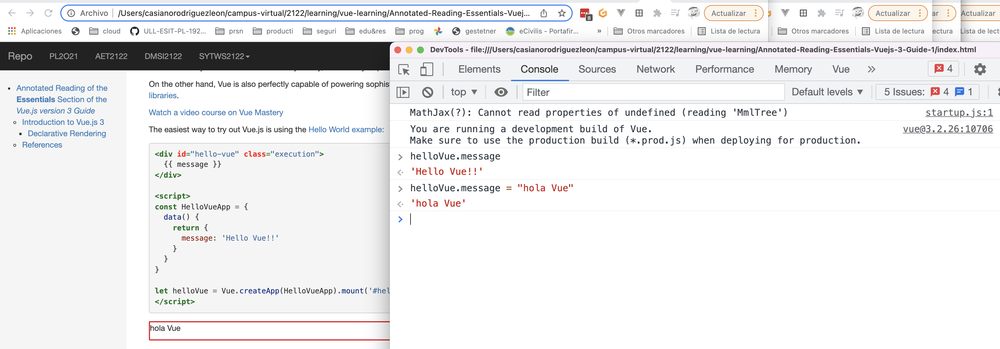

Annotated Reading of the Essentials Section of the Vue.js version 3 Guide
October 2022
These are my notes written in pandoc markdown (Casiano 2021) from reading the guide of Vue.js (v3) (Vue 2021), and other references.
This document only covers the initial sections of the Essentials part of the Guide, from section Introduction up to section Computed Properties.
These notes have been ellaborated using pandoc to translate it the markdown to HTML.
At the current time (December 2021), this notes are experimental, since the HTML generated by pandoc has some incompatibilities with Vue and I had to resort to some awful tricks to made them work.
- I’m using the pandoc-include filter
- The citation styles have been taken from (Org 2021).
- The HTML generation is reached using (Mushiyo 2017), a Pandoc HTML template that has a navbar on the top of the page for website navigation, and a TOC (table of contents) on the sidebar for page navigation. The
../mathjaxfile and the option--include-in-header=../mathjaxhave been added in this version to include mathjax so we can include formulas like \(x^2_3 = \sqrt{x^2+1}\)
To see the result, you can
- Open the deployment in the GitHub pages https://crguezl.github.io/learning-vue-3-getting-started-guide/ of the repo https://github.com/crguezl/learning-vue-3-getting-started-guide containing the notes or
- To install it locally, fork the repo. You have to have
pandocinstalled and then- Run
npm install-pandoc-dependenciesto installpandoc-include - Run
npm startto compile the sources and open the resultingindex.htmlfile.
- Run
This document uses Vue.js v3 and is loaded using the following lines:
<!-- Vue 3! -->
<script src="https://unpkg.com/vue@3.2.26"></script>
<!-- Use "https://unpkg.com/vue@next" if you want the last version -->Introduction to Vue.js 3
Vue (pronounced /vjuː/, like view) is a progressive framework for building user interfaces.
Unlike other monolithic frameworks, Vue is designed from the ground up to be incrementally adoptable.
The core library is focused on the view layer only, and is easy to pick up and integrate with other libraries or existing projects.
On the other hand, Vue is also perfectly capable of powering sophisticated Single-Page Applications when used in combination with modern tooling and supporting libraries.
Watch a video course on Vue Mastery
The easiest way to try out Vue.js is using the Hello World example:
<div id="hello-vue" class="execution">
{{ message }}
</div>
<script>
const HelloVueApp = {
data() {
return {
message: 'Hello Vue!!'
}
}
}
let helloVue = Vue.createApp(HelloVueApp).mount('#hello-vue')
</script>{{ message }}
Declarative Rendering and v-on
At the core of Vue.js is a system that enables us to declaratively render data to the DOM using straightforward template syntax:
<div id="counter">
Counter: {{ counter }}
</div>
<script>
const Counter = {
data() {
return {
counter: 0
}
}
}
let counterApp = Vue.createApp(Counter).mount('#counter')
</script>Execution:
Counter: {{ counter }}
We have already created our very first Vue app!
This looks pretty similar to rendering a string template, but Vue has done a lot of work under the hood. The data and the DOM are now linked, and everything is now reactive!.

Take a look at the example below where counter property increments every second and you will see how rendered DOM changes:
<div id="counter2" class="execution input-group mb-3"">
Counter: {{ counter }}
<div class="input-group-append">
<button v-on:click="stopTimer" class="btn btn-danger">Stop Timer</button>
</div>
</div>
<script>
const Counter2 = {
data() {
return {
clock: null,
counter: 0
}
},
mounted() {
this.clock = setInterval(() => {
this.counter++
}, 1000)
},
methods: {
stopTimer() {
clearInterval(this.clock);
this.counter = 0;
}
}
}
const Counter2App = Vue.createApp(Counter2).mount('#counter2')
</script>To let users interact with our app, we can use the v-on directive to attach event listeners that invoke methods on our instances.
Note that in this method we update the state of our app without touching the DOM - all DOM manipulations are handled by Vue, and the code you write is focused on the underlying logic.
In addition to text interpolation, we can also bind element attributes like this:
Hover your mouse over me for a few seconds to see my dynamically bound title!
Here we’re encountering something new.
The v-bind attribute you’re seeing is called a directive.
Directives are prefixed with v- to indicate that they are special attributes provided by Vue, and as you may have guessed, they apply special reactive behavior to the rendered DOM.
Here, we’re basically saying “keep this element’s title attribute up-to-date with the message property on the current active instance.”
Handling User Input with v-on and v-model
To let users interact with our app, we can use the v-on directive to attach event listeners that invoke methods on our instances.
Note that in this method we update the state of our app without touching the DOM - all DOM manipulations are handled by Vue, and the code you write is focused on the underlying logic.
<div id="event-handling" class="execution">
<p>{{ message }}</p>
<button v-on:click="reverseMessage" class="btn btn-danger">Reverse Message</button>
</div>
<script>
const EventHandling = {
data() {
return {
message: 'Hello Vue.js!'
}
},
methods: {
reverseMessage() {
this.message = this.message
.split('')
.reverse()
.join('')
}
}
}
let EventHandlingApp = Vue.createApp(EventHandling).mount('#event-handling')
</script>{{ message }}
Vue also provides the v-model directive that makes two-way binding between form input and app state a breeze:
<div id="two-way-binding">
<p>{{ message }}</p>
<input v-model="message" />
</div>
<script>
const TwoWayBinding = {
data() {
return {
message: 'Write inside the box!'
}
}
}
let twoWayBindingApp = Vue.createApp(TwoWayBinding).mount('#two-way-binding')
</script>{{ message }}
Open the developer tools and change twoWayBindingApp.message
Conditionals and Loops
v-if
It’s easy to toggle the presence of an element, too:
<div id="conditional-rendering" class="execution">
<span v-if="seen">Now you see me</span>
</div>
<script>
const ConditionalRendering = {
data() {
return {
seen: true
}
}
}
const ConditionalRenderingApp = Vue.createApp(ConditionalRendering).mount('#conditional-rendering')
</script>Now you see me
This example demonstrates that we can bind data to not only text and attributes, but also the structure of the DOM.
Moreover, Vue also provides a powerful transition effect system that can automatically apply transition effects when elements are inserted/updated/removed by Vue.
You can change ConditionalRenderingApp.seen = false in the developper tools to check the effect.
v-for
The v-for directive can be used to display a list of items using the data from an array:
<div id="list-rendering">
<ol>
<li v-for="todo in todos">
{{ todo.text }}
</li>
</ol>
</div>
<script>
const ListRendering = {
data() {
return {
todos: [
{ text: 'Learn JavaScript' },
{ text: 'Learn Vue' },
{ text: 'Build something awesome' }
]
}
}
}
const ListRenderingApp = Vue.createApp(ListRendering).mount('#list-rendering')
</script>- {{ todo.text }}
Open the developer tools and add a new item: ListRenderingApp.todos.push({text:"Learn TypeScript"})
Composing with Components
The component system is another important concept in Vue, because it’s an abstraction that allows us to build large-scale applications composed of small, self-contained, and often reusable components.
If we think about it, almost any type of application interface can be abstracted into a tree of components:

In Vue, a component is essentially an instance with pre-defined options.
Registering a component in Vue is straightforward:
- We create a component object as we did with App objects and
- We define it in parent’s
componentsoption:
<div id="todo-list-app1" class="execution">
<ol>
<todo-item
v-for="item in 3"
v-bind:key="item"
>
</ol>
</div>
<script>
// Create Vue application
const TodoListApp1 = Vue.createApp({
components: {
todoItem: { template: `<li>This is a todo</li>`} // Register a new component
}
}).mount('#todo-list-app1')
</script>But this would render the same text for every todo, which is not super interesting.
We should be able to pass data from the parent scope into child components.
Let’s modify the component definition to make it accept a prop:
app.component('todo-item', {
props: ['todo'],
template: `<li>{{ todo.text }}</li>`
})Now we can pass the todo into each repeated component using v-bind:
<div id="todo-list-app" class="execution">
<ol>
<!--
Now we provide each todo-item with the todo object
it's representing, so that its content can be dynamic.
We also need to provide each component with a "key",
which will be explained later.
-->
<todo-item
v-for="item in groceryList"
v-bind:todo="item"
v-bind:key="item.id"
></todo-item>
</ol>
</div>
<script>
const TodoList = {
data() {
return {
groceryList: [
{ id: 0, text: 'Vegetables' },
{ id: 1, text: 'Cheese' },
{ id: 2, text: 'Whatever else humans are supposed to eat' }
]
}
}
}
const TodoListAapp = Vue.createApp(TodoList)
TodoListAapp.component('todo-item', {
props: ['todo'],
template: `<li>{{ todo.text }}</li>`
})
TodoListAapp.mount('#todo-list-app')
</script>Execution:
Application & Component Instances
Creating an Application Instance
Every Vue application starts by creating a new application instance with the createApp function:
const app = Vue.createApp({
/* options */
})The application instance is used to register 'globals' that can then be used by components within that application:
const app = Vue.createApp({})
app.component('SearchInput', SearchInputComponent)
app.directive('focus', FocusDirective)
app.use(LocalePlugin)Most of the methods exposed by the application instance return that same instance, allowing for chaining:
Vue.createApp({})
.component('SearchInput', SearchInputComponent)
.directive('focus', FocusDirective)
.use(LocalePlugin)You can browse the full application API in the API reference.
The Root Component
The options passed to createApp are used to configure the root component. That component is used as the starting point for rendering when we mount the application.
An application needs to be mounted into a DOM element. For example, if we want to mount a Vue application into <div id="app"></div>, we should pass #app:
const RootComponent = {
/* options */
}
const app = Vue.createApp(RootComponent)
const vm = app.mount('#app')Unlike most of the application methods, mount does not return the application. Instead it returns the root component instance.
Although not strictly associated with the [MVVM pattern, Vue's design was partly inspired by it.
As a convention, we often use the variable vm (short for ViewModel) to refer to a component instance.
While all the examples on this page only need a single component, most real applications are organized into a tree of nested, reusable components. For example, a Todo application's component tree might look like this:
Root Component
└─ TodoList
├─ TodoItem
│ ├─ DeleteTodoButton
│ └─ EditTodoButton
└─ TodoListFooter
├─ ClearTodosButton
└─ TodoListStatisticsEach component will have its own component instance, vm.
For some components, such as TodoItem, there will likely be multiple instances rendered at any one time.
All of the component instances in this application will share the same application instance.
The root component isn't really any different from any other component.
The configuration options are the same, as is the behavior of the corresponding component instance.
Component Instance Properties
Properties defined in data are exposed via the component instance:
const app = Vue.createApp({
data() {
return { count: 4 }
}
})
const vm = app.mount('#app')
console.log(vm.count) // => 4There are various other component options that add user-defined properties to the component instance, such as methods, props, computed, inject and setup.
All of the properties of the component instance, no matter how they are defined, will be accessible in the component's template.
Vue also exposes some built-in properties via the component instance, such as $attrs and $emit.
These properties all have a $ prefix to avoid conflicting with user-defined property names.
Lifecycle Hooks
Each component instance goes through a series of initialization steps when it's created - for example, it needs to set up data observation, compile the template, mount the instance to the DOM, and update the DOM when data changes. Along the way, it also runs functions called lifecycle hooks, giving users the opportunity to add their own code at specific stages.
For example, the created hook can be used to run code after an instance is created:
Vue.createApp({
data() {
return { count: 1 }
},
created() {
// `this` points to the vm instance
console.log('count is: ' + this.count) // => "count is: 1"
}
})There are also other hooks which will be called at different stages of the instance's lifecycle, such as
All lifecycle hooks are called with their this context pointing to the current active instance invoking it.
TIP
Don't use arrow functions on an options property or callback, such as
created: () => console.log(this.a) or
vm.$watch('a', newValue => this.myMethod()).
Since an arrow function doesn't have a this, this will be treated as any other variable and lexically looked up through parent scopes until found, often resulting in errors such as Uncaught TypeError: Cannot read property of undefined or Uncaught TypeError: this.myMethod is not a function.
Lifecycle Diagram
Below is a diagram for the instance lifecycle. You don't need to fully understand everything going on right now, but as you learn and build more, it will be a useful reference.